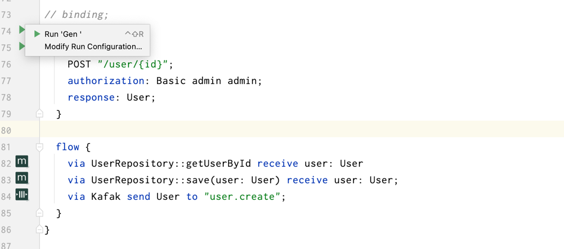

Feakin - 软件开发工业化方法
Feakin 是一个软件开发工业化（软件架构设计与开发标准化）方法，基于 DDD （领域驱动设计）与 TypeFlow 编程思想。

核心设计理念：
- 架构孪生：双态绑定。提供架构设计态与实现态的双向绑定，保证架构设计与实现的一致性。
- 显性化设计意图。将软件设计的意图化，借助于 DSL 语言的特性，将意图转换化代码。
- 类型与事件驱动。通过事件驱动的方式，将数据类型与领域事件进行绑定。
详细见：《Design Principles 一节》
Feakin 主要组成部分：
- Fklang 是一个基于软件开发工业化思想，设计的架构设计 DSL。以确保软件系统描述与实现的一致性。通过显式化的软件架构设计，用于支持 AI 代码生成系统的嵌入。
- Intellij Plugin 是 Feakin 的一个 IntelliJ 插件，用于将 Feakin/Fklang 集成到项目中。
- （Todo） Vscode Plugin 是 Feakin 的一个 Vscode 插件，用于将 Feakin/Fklang 集成到项目中。
- Feakin Web 提供了一个架构设计与可视化协作工具，让架构师能够更加高效地进行架构设计与可视化协作。
Feakin IntelliJ Plugin
安装：

Fklang 示例：
// DDD 上下文映射图
ContextMap TicketBooking {
Reservation -> Cinema;
Reservation -> Movie;
Reservation -> User;
}
Context Reservation {
Aggregate Reservation;
}
Context Cinema {
Aggregate Cinema;
}
Aggregate Cinema {
Entity Cinema, ScreeningRoom, Seat;
}
// DDD 领域事件
impl CinemaCreated {
endpoint {
// API 声明与验证
GET "/book/{id}";
authorization: Basic admin admin;
response: Cinema;
}
}
Feakin Web
在线地址：https://online.feakin.com/
点击 TEAMPLATES -> Feakin Sample 查看示例

Fklang
下载地址：https://github.com/feakin/fklang/releases
Usage: fkl <COMMAND>
Commands:
gen Generate code from a fkl file, current support Java
dot Generate dot file from a fkl file
parse Parse a fkl file and print the AST
help Print this message or the help of the given subcommand(s)
Options:
-h, --help Print help information
CLI 示例：
fkl gen --main /Users/phodal/IdeaProjects/untitled/simple.fkl --impl CinemaCreated
@GetMapping("/book/{id}")
public Cinema creatCinema() { }
Quick Start
- 安装 Feakin Intellij 插件:
- 下载 FKL Cli（SDK）：https://github.com/feakin/fklang/releases
- 重命名为 fkl（macOS 下为 fkl-macos, Windows 下为 fkl-windows.exe, ...），并将其放置到 PATH 中
- 添加可执行权限：
chmod +x fkl- 遇到 "cannot be opened because the developer cannot be verified."，参考 https://support.apple.com/zh-cn/HT202491
- 检查 CLI 是否安装成功：
fkl --help
- 创建一个 FKL 文件，比如：
cinema.fkl，添加如下代码：
impl CinemaCreated {
endpoint {
GET "/book/{id}";
authorization: Basic admin admin;
response: Cinema;
}
}
impl CinemaUpdated {
endpoint {
POST "/book/{id}";
request: CinemaUpdatedRequest;
authorization: Basic admin admin;
response: Cinema;
}
flow {
via UserRepository::getUserById receive user: User
via UserRepository::save(user: User) receive user: User;
via MessageQueue send CinemaCreated to "CinemaCreated"
}
}
- 在 Intellij IDE 中打开 FKL 文件，点击左侧的
Run按钮，查看是否有如下输出：
设计理念：软件开发工业化
Feakin 的核心三个设计思念是：
- 架构孪生：双态绑定。提供架构设计态与实现态的双向绑定，保证架构设计与实现的一致性。
- 显性化设计意图。将软件设计的意图化，借助于 DSL 语言的特性，将意图转换化代码。
- 类型与事件驱动。通过事件驱动的方式，将数据类型与领域事件进行绑定。
Feakin 作为架构设计态与实现代码的中间语言，如下图所示：
在实现上便是，通过声明式 DSL 来绑定代码实现与架构设计，保证架构设计与实现的一致性。
架构孪生：双态绑定
在治理架构时，我们（ArchGuard 开发团队）推荐采用三态治理的方式，即设计态、实现态和运行态。 而在实现 Feakin 时，则是关注于如何实现设计态与实现态的绑定，我们将这个理念称为 "架构孪生"。
架构孪生是一种旨在精确反映架构设计的虚拟模型，它以数字化的形式对软件的架构、代码模型、分层、实现技术等的进行动态的呈现。
在架构生命周期的早期实施数字孪生允许在每个阶段模拟新代码和设计变化，以优化系统的架构。架构模型是可持续建设和运营中使用的架构孪生策略的关键组成部分。
为了实现这样的技术，我们需要面对几个挑战：
- 架构建模：架构的功能、特性和行为。
- 模型实现：
- 生命周期：
除此，还有一个非常有意思的问题：
- 如何针对于新的需求，动态模拟软件的架构演进，以发现潜在的架构瓶颈？
PS：既然如此，那么模拟态也应该成为 Feakin 设计的一个要点。
双态绑定：设计态 + 实现态
- 设计态。以 DDD 战略、战术作为基本的设计框架
- 实现态。以架构扫描作为基本点。
生命周期模型
关注于：
- 设计态模型。
- 实现态模型。
- 模板态/未来态模型。
架构因子
另外一个核心问题便是，如何定义这里的 "架构模型"，以及设计对应的工具，诸如于：TwinDesign、Arch Twin？所以，应该由 CodeDB/ArchDB 来实现。
在构建数字孪生时，我们会给研究对象（例如，风力涡轮机）配备与重要功能方面相关的各种传感器。同样的在构建架构孪生时，我们也需要一系列的 "传感器" 来测量研究对象的各种属性。
也因此，我们也可以定义三种形态的 "传感器" ：
- 设计时 - 架构描述性传感器：描述性传感器用于描述架构的功能、特性和行为。
- 开发时 - 静态量化传感器：静态量化传感器用于描述架构的实现技术。
- 运行时 - 探针（probe）：探针用于描述架构的运行时行为。
类型与事件驱动
在设计理念中，我们将代码逻辑分为两个部分：状态和行为。状态是指数据，行为是指数据的操作。在我们的设计中，状态和行为是分离的，状态是不可变的，行为是可变的。这种设计的好处是，我们可以在不同的状态之间进行切换，而不需要重新创建行为。这种设计的缺点是，我们需要在状态和行为之间进行绑定，这样才能保证状态和行为的一致性。 对应实现上，状态既是类型，行为视为事件。
在数学里，一个函数就是一组输入与一组容许的输出之间的关系，并且每个输入都与唯一一个输出相对应。 —— 维基百科
意识着，函数是应该是无状态的 —— 输入确定，输出就是确定的。
如何内置记忆（memoization）属性是，我们在设计的时候，要考虑的因素。它可以帮助我们提升性能，但是也会带来一些副作用。
纯函数
《函数响应式领域建模》中的 Scala 示例：
trait Account {
def name: String
def balance: BigDecimal
}
case class OpenedAccount(..) extends Account
trait InterestBearingAccount extends Account {
def interestRate: BigDecimal
}
case class SavingAccount(..) extends InterestBearingAccount
case class MoenyMarketAccount(..) extends InterestBearingAccount
trait AccountService {
def calculateInterest(..): BigDecimal
}
事件驱动
领域事件是不可变的，它是我们在实现的过程中，对领域的抽象。
显性化设计意图
声明式编程
声明式编程（英语：Declarative programming）是一种编程范式，与命令式编程相对立。 它描述目标的性质，让计算机明白目标，而非流程。
显性化子任务
impl CinemaUpdated {
...
flow {
via UserRepository::getUserById receive user: User
via UserRepository::save(user: User) receive user: User;
}
}
AI 意图分析
生成 API
// create spring api POST "/user/{id}" with response: User
@RestController
@RequestMapping("/user")
class UserController {
@PostMapping("/{id}")
fun getUserById(@PathVariable id: String): User {
return User()
}
}
如下的代码是，我们借助于 AI 生成的 Java 代码示例：
// via UserRepository::getUserById receive user: User
User user = userRepository.getUserById();
// via UserRepository::save(user: User) receive user: User;
User user = userRepository.save(user);
DDD in Feakin
Feakin 的 DDD 语法参考了：https://contextmapper.org/docs/context-map/
Feakin 语法可以实现三个阶段：
- 战略设计。语法：
ContextMap、Context - 战术设计。语法：
Aggregate、Entity、ValueObject - 实现。语法：
impl
Quick Start
- 在线编辑器：https://online.feakin.com/
- 在
Template->DDD Booking使用 Feakin 语法设计
ContextMap TicketBooking {
Reservation -> Cinema;
Reservation -> Movie;
Reservation -> User;
}
Context Reservation {
Aggregate Reservation;
}
Context Cinema {
Aggregate Cinema;
}
Aggregate Cinema {
Entity Cinema, ScreeningRoom, Seat;
}
生成如下图所示的结果：

详细过程：
- Fklang 编译器会转义 fkl 为 Dot 语法
- Feakin Render 渲染 Dot 语法
生成的 DOT 代码如下所示：
digraph TicketBooking2 {
component=true;layout=fdp;
node [shape=box style=filled];
cluster_reservation -> cluster_cinema;
cluster_reservation -> cluster_movie;
cluster_reservation -> cluster_user;
subgraph cluster_cinema {
label="Cinema(Context)";
subgraph cluster_aggregate_cinema {
label="Cinema(Aggregate)";
entity_Cinema [label="Cinema"];
entity_ScreeningRoom [label="ScreeningRoom"];
entity_Seat [label="Seat"];
}
}
subgraph cluster_movie {
label="Movie(Context)";
}
subgraph cluster_reservation {
label="Reservation(Context)";
subgraph cluster_aggregate_reservation {
label="Reservation(Aggregate)";
}
}
subgraph cluster_user {
label="User(Context)";
}
}
DDD Strategy
Step 1. Design Context Map
表示领域上下文图，用于描述系统的边界。
ContextMap TicketBooking {
Reservation -> Cinema;
Reservation -> Movie;
Reservation -> User;
}
关系：
-- Undirected,->- PositiveDirected,<-- NegativeDirected,<->- BiDirected,
Step 2. Context
表示限界上下文，以及对应的聚合间的关系。
Context Reservation {
Aggregate Reservation;
}
DDD tactics
Step 1. DomainObject
表示领域对象，包括：聚合、实体、值对象。
Aggregate Reservation {
Entity Ticket, Reservation;
}
Entity Reservation {
}
附录：在线示例代码
ContextMap TicketBooking {
Reservation -> Cinema;
Reservation -> Movie;
Reservation -> User;
}
Context Reservation {
Aggregate Reservation;
}
Aggregate Reservation {
Entity Ticket, Reservation;
}
Entity Reservation {}
Entity Ticket {}
Context Cinema {
Aggregate Cinema;
}
Aggregate Cinema {
Entity Cinema, ScreeningRoom, Seat;
}
Entity Cinema { }
Entity ScreeningRoom { }
Entity Seat { }
Context Movie {
Aggregate Movie;
}
Aggregate Movie {
Entity Movie, Actor, Publisher;
}
Entity Movie { }
Entity Actor { }
Entity Publisher { }
Context User {
Aggregate User;
}
Aggregate User {
Entity User;
}
Entity User {
}
Entity Payment {
}
ValueObject Price { }
ValueObject Notifications { }
Chapter 2 - Binding Implementation
本节需要结合 IDEA 插件使用：

编写后 Binding 之后，在左侧点击 Run 'Gen' 即可生成代码。
Implementation DomainEvent
创建 API 时，需要绑定领域事件到实现。
impl UserCreated {
endpoint {
POST "/user/{id}";
authorization: Basic admin admin;
response: User;
}
flow {
via UserRepository::getUserById receive user: User
via UserRepository::save(user: User) receive user: User;
via Kafak send User to "user.create";
}
}
Layered Implementation
在配置了如下的分层之后，将直接添加到 Controller 中：
layered DDD {
dependency {
"interface" -> "application"
"interface" -> "domain"
"domain" -> "application"
"application" -> "infrastructure"
"interface" -> "infrastructure"
}
layer interface {
package: "com.feakin.demo.rest";
}
layer domain {
package: "com.feakin.demo.domain";
}
layer application {
package: "com.feakin.demo.application";
}
layer infrastructure {
package: "com.feakin.demo.infrastructure";
}
}
Code Generator
code generator for fklang
Download from: https://github.com/feakin/fklang/releases
Feakin is a architecture design and visual collaboration tool. This is the parser for Feakin.
Usage: fkl <COMMAND>
Commands:
dot generate Graphviz/Dot from fkl file
ast generate ast from fkl file
gen generate code from fkl file
run run function from fkl file
help Print this message or the help of the given subcommand(s)
Options:
-h, --help Print help information
-V, --version Print version information
Basic: generate method
sample code:
impl HelloGot {
endpoint {
GET "/hello";
response: String;
}
}
output:
@GetMapping("/hello")
public String gotHello() {
}
Auto insert: Aggregate and Layered
declaration with aggregate and layered:
impl HelloGot {
aggregate: Hello; // here
endpoint {
GET "/hello";
response: String;
}
}
layered DDD {
layer interface {
package: "com.feakin.demo.rest";
}
layer domain {
package: "com.feakin.demo.domain";
}
layer application {
package: "com.feakin.demo.application";
}
layer infrastructure {
package: "com.feakin.demo.infrastructure";
}
}
with insert code to: src/main/java/com/feakin/demo/rest/Controller.java
@GetMapping("/hello")
public String gotHello() {
}
在生成代码时，会先检查已有的 Event 是否存在于 Controller 中，如果存在则报错，如果不存在则自动插入。
过程：
- 使用 TreeSitter 解析目标源码，生成 AST
- 查找对应生成的方法是否已经存在
Test with Http Request
编写用例：
impl GitHubOpened {
endpoint {
GET "https://book.feakin.com/";
response: String;
}
}
impl FeakinJson {
endpoint {
GET "https://raw.githubusercontent.com/feakin/vscode-feakin/master/package.json";
response: String;
}
}
测试：

点击 endpoint 左侧的运行按钮，即可运行用例。
Run by Cli
$ fkl run --main ./test_data/cli/impl.fkl --impl GitHubOpened --func request
Architecture Guarding
分层架构守护
layered DDD {
dependency {
"interface" -> "application"
"interface" -> "domain"
"domain" -> "application"
"application" -> "infrastructure"
"interface" -> "infrastructure"
}
layer interface {
package: "com.feakin.demo.rest";
}
layer domain {
package: "com.feakin.demo.domain";
}
layer application {
package: "com.feakin.demo.application";
}
layer infrastructure {
package: "com.feakin.demo.infrastructure";
}
}
Run by IDE:
点击 Guard 按钮，会自动检查依赖是否符合预期。
Run by CLI:
$ fkl run --main ./test_data/cli/impl.fkl --func guarding
更多守护规则（TBD）
refs: Guarding
class(implementation "BaseParser")::name should endsWith "Parser";
class("java.util.Map") only accessed(["com.phodal.pepper.refactor.staticclass"]);
class(implementation "BaseParser")::name should not contains "Lexer";
Chapter 5 - HTTP API verify (TBD)
契约驱动的 HTTP API （TBD)
- HTTP API 测试集成
- 先验条件
- 后验条件
impl GitHubOpened {
endpoint {
GET "https://book.feakin.com/";
response: String;
}
}
impl FeakinJson {
endpoint {
GET "https://raw.githubusercontent.com/feakin/vscode-feakin/master/package.json";
response: String;
}
}
Run by Cli
$ fkl run --main ./test_data/cli/impl.fkl --impl GitHubOpened --func http-request
校验机制
Chapter 6 - Mock Server
Run by CLI:
$ fkl run --main docs/samples/impl.fkl --func mock-server --env Local
Run by IDE:

API Mock Server
Feakin 通过 Mock Server 来模拟 API 的返回结果，以便于前端开发人员在没有后端 API 的情况下进行开发。
处理逻辑：
- 从 Feakin 项目中读取 Struct 的定义：
context->aggregate->entity - 解析 Struct 的定义，生成对应的 Builtin Type
- 转换 Builtin Type 为 Mock Type
- 根据 Mock Type 生成 Fake Values
- 返回 Response
Builtin Type
#![allow(unused)] fn main() { #[derive(Serialize, Deserialize, Debug, Clone, PartialEq, Eq)] pub enum BuiltinType { Any, String, Integer, Float, Boolean, Date, DateTime, Timestamp, Array(Vec<BuiltinType>), Map(HashMap<String, BuiltinType>), Special(String), } }
Mock Type
#![allow(unused)] fn main() { #[derive(Deserialize, Debug, Clone, PartialEq)] pub enum MockType { Null, // Optional(Box<MockType>), /// basic type Unknown(String), String(String), Integer(i64), Float(f64), Boolean(bool), /// structural type Array(Vec<MockType>), Map(IndexMap<String, MockType>), // additional type Date(String), DateTime(String), Timestamp(i64), Uuid(String), } }
Chapter 7 - Environment
Env
测试数据库连接
$ fkl run --main docs/samples/impl.fkl --func test-connection --env Local
env Local {
datasource {
driver: postgresql
host: "localhost"
port: 5432
database: "test"
}
server {
port: 9090;
}
}
env Staging {
// URL 模式
datasource {
url: "mysql://localhost:3306/test"
}
}
自定义环境变量
env Local {
kafka {
host: "localhost"
port: 9092
}
}
环境检查
verify-env
检查当前环境是否配置正确 ？
Fklang Specification
Fklang provide a two-way binding between design-implementation for architecture.
Basic Works:
- DDD syntax. DDD strategy and tactic description.
- DomainEvent Implementation. for generate implementation of DomainEvent.
- Binding. mapping DSL to SourceCode
- Layered syntax. layered structured syntax.
In dev:
- Env for Database.
- SourceSet Plugin. third-part integration, like PlantUml, Swagger.
Bootstrapping:
- Builtin Types. like Context, Container, or else.
- Description syntax. description design in fake code.
- Typedef (TBD). for DDD syntax type bootstrapping.
Basic Syntax
关键词基本命名规则：
- DDD 关键词以大写开头，驼峰式命名
- 其他以小写开头，避免驼峰
- 特殊场景，遵循该领域的命名规则（但是，应该支持全小写）
- 例外场景 1：HTTP 请求方法，使用全大写
assign
attr_type: attr_value;
example:
request: CinemaUpdatedRequest;
declare
Keyword IDENTIFIER (COMMA IDENTIFIER)*;
example
Aggregate Ticket {
Entity Ticket, Seat;
}
DDD
DDD Syntax:
| decl | usage | |
|---|---|---|
| context_map_decl | : | [ 'ContextMap' ] [ ID ] '{' (context_node_decl | context_node_rel ) '}' |
| | | att_list | |
| context_node_decl | : | ['context'] [ID] |
| context_node_rel | : | [ ID ] rel_symbol [ ID ] |
| rel_symbol | : | ('->' | '<-' | '<->') |
| context_decl | : | [ 'Context' ] [ ID ] '{' aggregate_list? '}' |
| | | att_list | |
| att_list | : | attr_item+ |
| attr_item | : | ([ ID ] '=' [ value ] ','?)* ';'? |
| | | ([ ID ] ':' [ value ] ','?)* ';'? | |
| | | [ ID ] ([ value, ',' ])* ';'? | |
| aggregate_decl | : | [ 'Aggregate' ] [ ID ] '{' entity_list '}' |
| | | att_list | |
| entity_decl | : | [ 'Entity' ] [ ID ] '{' value_object_list '}' |
| | | att_list | |
| value_object__decl | : | [ 'ValueObject' ] [ ID ] '{' value_list '}' |
| | | att_list |
Sample
ContextMap Ticket {}
Context ShoppingCarContext {}
// render wtih UML styled?
Aggregate Cart {
""" inline doc sample
just-demo for test
"""
DomainEvent CartCreated, CartItemAdded, CartItemRemoved, CartItemQuantityChanged, CartCheckedOut;
DomainEvent CartItemQuantityChanged;
Entity Cart;
}
Entity Cart {
// it's to many, can change in different way.
ValueObject CartId
ValueObject CartStatus
ValueObject CartItem
ValueObject CartItemQuantity
ValueObject CartItemPrice
ValueObject CartItemTotal
ValueObject CartTotal
}
DomainEvent Implementation
Subscribe / Publish / Event / Flow
API
- input -> request
- pre-validate
- output -> response
- post-validate
- process -> flow
- tasking
compare to given-when-then.
impl CinemaCreated {
endpoint {
POST "${uri}/post";
request: Request;
authorization: Basic "{{username}}" "{{password}}";
}
// created in ApplicationService
flow {
via UserRepository::getUserById() receive user: User
// send "book.created" to Kafka
via UserRepository::saveUser(user: User) receive void
// or
via UserRepository::save(user: User) receive user: User;
// message queue
via MessageQueue send CinemaCreated to "CinemaCreated"
// http request
via HTTP::post() send Message to "${uri}/post"
// grpc Greeter
via GRPC::Greeter send CinemaCreated to "CinemaCreated"
// map filter
when(isUserValid) {
is true => {
// do something
}
is false => {
// do something
}
}
}
}
expect generate code will be:
// get_user_by_user_id from JPA
public User getUserByUserId(String userId) {
return userRepository.findByUserId(userId);
}
// get_user_by_user_id from MyBatis
public User getUserByUserId(String userId) {
return userMapper.getUserByUserId(userId);
}
Binding
Binding provide a way to binding source code to Context
Aggregate Ticket {
DomainEvent TicketCreated, TicketUpdated, TicketDeleted;
}
// or to service ?
impl TicketBinding {
aggregate: Ticket;
endpoint {
GET "/ticket/{id}";
request: GetTicketRequest;
authorization: Basic admin admin;
response: Ticket;
}
}
//define config: ExtraConfig {
// baseUrl: "/ticket";
// language: "Java";
// package: "com.phodal.coco";
//}
If no config, will use default config by scanner?
SourceSet (TBD)
SourceSet is design for support 3rd-party dsl, like PlantUML, Swagger.yaml
| decl | usage | |
|---|---|---|
| source_set_decl | : | simple_source_set_decl |
| | | space_source_set_decl | |
| space_source_set_decl | : | [ 'SourceSet' ] [ ID ] '{' att_list '}' |
| simple_source_set_decl | : | [ 'SourceSet' ] [ ID ] '(' att_list ')' |
| implementation_decl | : | [ 'impl' ] [ID] '{' (inline_doc) '}' |
PlantUML for Structure
file_type: uml, puml
SourceSet sourceSet {
feakin {
srcDir: ["src/main/resources/uml"]
}
puml {
parser: "PlantUML"
srcDir: ["src/main/resources/uml"]
}
}
Swagger API (TBD)
file_type: Yaml, JSON
with: XPath
refs:
//
SourceSet petSwagger {
swagger {
parser: "Swagger"
srcDir: ["src/main/resources/swagger"]
xpath: "/definitions/Pet"
}
}
// with XPath
UniqueLanguage model ? (TBD)
file_type: CSV, JSON, Markdown ?
SourceSet TicketLang {
UniqueLanguage {
srcDir: "ticket.csv";
type: UniqueLanguage;
prefix: "Ticket";
}
}
Layered
Layered is design for decl
| decl | usage | |
|---|---|---|
| layered_decl | : | 'layered' ([ ID ] | 'default' ) '{' layered_body? '}' |
| layered_body | : | layer_dependency |
| | | layer_item_decl | |
| layer_item_decl | : | 'layer' [ ID ] '{' layer_item_entry* '}' |
| layer_item_entry | : | package_decl |
| package_decl | : | 'package' ':' [ string ] |
can be guarding for model
layered DDD {
dependency {
"interface" -> "application"
"interface" -> "domain"
"domain" -> "application"
"application" -> "infrastructure"
"interface" -> "infrastructure"
}
layer interface {
package: "com.example.book"
}
layer domain {
package: "com.example.domain"
}
layer application {
package: "com.example.application"
}
layer infrastructure {
package: "com.example.infrastructure"
}
}
Env
For database and mock server
env Local {
datasource {
driver: postgresql
host: "localhost"
port: 5432
database: "test"
}
server {
port: 9090;
}
}
with API testing (Todo)
with Help utils function
- builtin-functions: mock server
- builtin-functions: verify server for testing contract
impl CinemaCreated {
endpoint {
GET "/book/{id}";
request: CreateBookRequest;
authorization: Basic admin admin;
response: Cinema;
// a mock server for testing
mock {
port: 8080;
};
verify {
env: Local;
expect {
"status": 200
"data": {
// build in APIs ?
"id": {{$uuid}};
"price": {{$randomInt}};
"ts": {{$timestamp}};
"value": "content"
}
}
}
// full processing (TBD)
request CreateBookRequest {
// schema => data,
// schema {
// "title" : "string",
// "author" : "string",
// "price" : "number"
// }
data {
"title" : "The Lord of the Rings",
"author" : "J.R.R. Tolkien",
"price" : 29.99
}
validate {
// title.length > 10 ?
title {
required { min: 3, max: 10 }
pattern { regex: "^[a-zA-Z0-9]+$" }
range { min: 1, max: 100 }
}
}
}
middle {
via User get/update/delete/post userId
via Kafka send "book.created"
}
response CreateBookResponse {
struct {
"id" : "number"
}
validate { }
}
// with source side (TBD)
output CreateBookResponse(xpath="");
input CreateBookResponse(sourceSet="PetSwagger" location="");
}
env Local {
host: "http://localhost:8080";
}
Default impl config (TBD)
var config: Config {
language: "feakin"
framework: "Spring"
message: "Kafka"
dao: "JPA"
cache: "Redis"
search: "ElasticSearch"
}
Bootstrapping
Typedef (TBD)
Typedef provide custom syntax like container or others, can support for bootstrapping DDD syntax.
BuildIn Types
Basic Types
| Name | Description |
|---|---|
| identifier | unique identifier |
| binary | Any binary data |
| bits | A set of bits or flags |
| boolean | "true" or "false" |
| enumeration | Enumerated strings |
| string | string |
| number | Any number, can be float or int |
| optional ? | Optional type ? |
Data Types ?
| Name | Description |
|---|---|
| Table | Table data |
| List | List data |
| Map | Map data |
| Set | Set data |
| Tuple | Tuple data |
| Object | Object data |
| Array | Array data |
| Date | Date data |
| Time | Time data |
| DateTime | DateTime data |
| Duration | Duration data |
| Interval | Interval data |
Variable
var source: JavaSource {
language: "Java";
package: "com.phodal.coco";
}
Container
def ContextMap {
// todo: parser generator
}
| decl | usage | |
|---|---|---|
| typedef_decl | : | [ 'typedef'] '(' metaType ')' ID '{' (decl_list) '}'; |
| decl_list | : | decl_item* |
| decl_item | : | [ID] ':' decl_name |
Expression
Description Syntax:
| decl | usage | |
|---|---|---|
| description_decl | : | [ ID ] '{' expr* '}' |
| expr | : | if_expr |
| | | choose_expr | |
| | | behavior_expr | |
| if_expr | : | [ 'if' ] '(' [ expression ] ')' |
| when_expr | : | [ 'when' ] '(' [ expression ] ')' |
| behavior_expr | : | ['via'] [ ID ] action [ID] |
| action | : | [ 'get' | 'update' | 'delete' | 'create' | 'send'] |
var sample: FakeCode {
// if (and ?) then {} else {}
when(condition) {
is condition1 {
}
is condition2 {
}
else {
}
}
done
operator: <, >, >=, <=, ==, +, -, *, %, /, ?
// call
via Entity send/ receive Event;
}
Function (Bootstrapping)
- mock
- verify
- validate
mock {
}
func mock(container: MockContainer) {
// steps
}
fun verify(input: Input, output: Output) {
// steps
}
fun validate(input: Input, output: Output) {
// steps
}
Development Guide
Setup
Feakin
repo: https://github.com/feakin/feakin
Web:
- Install Node.js
- clone repo
- install
npm install --legacy-peer-deps
- start server by nx
nx run render:start
Rust:
- Install Rust toolchain
curl --proto '=https' --tlsv1.2 -sSf https://sh.rustup.rs | sh
- cd
crates
Intellij IDEA
repo: https://github.com/feakin/intellij-feakin
- Install Intellij IDEA
- clone repo
- run
./gradlew buildPlugin
Collaboration
CRDT
服务端：Actix + Diamond Types + CRDT
对于服务端来说，它本身其实也是个客户端，只需要接受客户端生成的 patch 即可，在合并了 patch 之后，将它广播出去即可：
#![allow(unused)] fn main() { let before_version = live.lock().unwrap().version(); after_version = self.ops_by_patches(agent_name, patches).await; // or let after_version = self.insert(content, pos).await; // or after_version = self.delete(range).await; let patch = coding.patch_since(&before_version); }
Feakin，当前版本在这里，除了支持 patch，还可以同时支持 ins、del 这样的操。核心的代码就这么几行，剩下的代码都是 CRUD，没啥好玩的。
客户端：编辑生成 patches
从结果代码来说，这部分相当的简单：：
let localVersion = doc.getLocalVersion();
event.changes.sort((change1, change2) => change2.rangeOffset - change1.rangeOffset).forEach(change => {
doc.ins(change.rangeOffset, change.text);
doc.del(change.rangeOffset, change.rangeLength);
})
let patch = doc.getPatchSince(localVersion);
由于在前端中 Feakin 采用的是 monaco 的实现，需要在发生变更时，执行 ins 和 del 等，以生成 patch。
客户端：编辑器应用 patches
对于客户端来说，接受 patch 并应用也不复杂，然而我被坑了一晚上（被坑在了如何动态更新 Monaco 的模型上）：
let merge_version = doc.mergeBytes(bytes)
doc.mergeVersions(doc.getLocalVersion(), merge_version);
let xfSinces: DTOperation[] = doc.xfSince(patchInfo.before);
xfSinces.forEach((op) => {
...
});
Graph
Graph GIM
see in: graph.ts
export interface Graph {
nodes: Node[];
edges: Edge[];
props?: GraphProperty;
subgraphs?: Graph[];
}
export interface Node {
id: string;
label: string;
x?: number;
y?: number;
width?: number;
height?: number;
subgraph?: boolean;
data?: NodeData;
props?: ElementProperty;
}
export interface Edge {
id: string;
label?: string;
points: Point[];
width?: number;
height?: number;
// like beziere curve need a cp
controlPoints?: Point[];
data?: EdgeData;
props?: EdgeProperty;
}
Graph Exporter
Graphviz WASM
@hpcc-js/wasm 提供了一个 Graphviz 的 WASM 封装。
Render
Konva Canvas
Fklang
Fklang 是一个架构设计 DSL，通过显性化软件架构设计，以确保软件系统描述与实现的一致性。并在工作流中，内嵌对于 AI 代码生成软件的支持，以构筑完整的开发者体验。
inspired by: ContextMap and π-ADL
FKL Parser
解析器生成器：https://pest.rs/
Pest 在线编辑器：https://pest.rs/#editor
语法
declarations = _{ SOI ~ declaration* ~ EOI }
declaration = {
include_decl
| context_map_decl
| context_decl
| ext_module_decl
| aggregate_decl
| entity_decl
| value_object_decl
| struct_decl
// ddd
| component_decl
| implementation_decl
| layered_decl
// extension
| source_sets_decl
}
Fklang Code Generator
Java
AWS Lambda (TBD)
Fklang code binding
Whole process:
- parse Fklang binding syntax, identify the binding target.
- parse the target file, identify the binding target. (use Scanner)
- generate the binding code, and insert it into the target file.
- format the target file?
mods:
- code_meta. metadata of the code, such as the package name, the class name, the function name, etc.
- construct. parse source code to code_meta with TreeSitter.
- inserter. insert code to source code.
- exec. execute the binding process.
TreeSitter
Online playground: https://tree-sitter.github.io/tree-sitter/playground
TreeSitter is support Pattern Matching with Queries can use S-expression to query the AST.
Query examples
Java Code:
class DateTimeImpl {
public Date getDate() {
return new Date();
}
}
Query Language:
(package_declaration
(scoped_identifier) @package-name)
(import_declaration
(scoped_identifier) @import-name)
(program
(class_declaration
name: (identifier) @class-name
interfaces: (super_interfaces (interface_type_list (type_identifier) @impl-name))?
body: (class_body (method_declaration
(modifiers
(annotation
name: (identifier) @annotation.name
arguments: (annotation_argument_list)? @annotation.key_values
)
)?
type: (type_identifier) @return-type
name: (identifier) @function-name
parameters: (formal_parameters (formal_parameter
type: (type_identifier) @param-type
name: (identifier) @param-name
))?
))?
)
)
Output:
program [0, 0] - [6, 0]
class_declaration [0, 0] - [4, 1]
name: identifier [0, 6] - [0, 18]
body: class_body [0, 19] - [4, 1]
method_declaration [1, 4] - [3, 5]
modifiers [1, 4] - [1, 10]
type: type_identifier [1, 11] - [1, 15]
name: identifier [1, 16] - [1, 23]
parameters: formal_parameters [1, 23] - [1, 25]
body: block [1, 26] - [3, 5]
return_statement [2, 8] - [2, 26]
object_creation_expression [2, 15] - [2, 25]
type: type_identifier [2, 19] - [2, 23]
arguments: argument_list [2, 23] - [2, 25]
Fklang Build System
Intellij Plugins
Main Resources:
- Custom Language (basic concepts of custom language support)
- Intellij Rust GitHub (A good example of a custom language plugin)
- Intellij Plugin Development
Define by plugin.xml
IDEA
<extensions defaultExtensionNs="com.intellij">
<!-- File-type Factory -->
<fileType name="Feakin File"
language="Feakin"
implementationClass="com.feakin.intellij.FkFileType"
fieldName="INSTANCE"
extensions="fkl"/>
<internalFileTemplate name="Feakin File"/>
<!-- Parser -->
<lang.parserDefinition language="Feakin"
implementationClass="com.feakin.intellij.parser.FkParserDefinition"/>
<lang.syntaxHighlighter language="Feakin"
implementationClass="com.feakin.intellij.highlight.FkSyntaxHighlighter"/>
<lang.psiStructureViewFactory language="Feakin"
implementationClass="com.feakin.intellij.structure.FkStructureViewFactory"/>
<!-- Editor -->
<extendWordSelectionHandler implementation="com.feakin.intellij.ide.editor.FkBlockSelectionHandler"/>
<lang.foldingBuilder language="Feakin"
implementationClass="com.feakin.intellij.edit.FkFoldingBuilder"/>
<lang.commenter language="Feakin" implementationClass="com.feakin.intellij.completion.FkCommenter"/>
<lang.braceMatcher language="Feakin" implementationClass="com.feakin.intellij.ide.FkBraceMatcher"/>
<!-- Navigate between useDomainObject and DomainObjectDecl -->
<indexedRootsProvider implementation="com.feakin.intellij.indexing.FkIndexableSetContributor"/>
<stubElementTypeHolder class="com.feakin.intellij.lexer.FkElementTypes"/>
<stubIndex implementation="com.feakin.intellij.resolve.indexes.FkNamedElementIndex"/>
<stubIndex implementation="com.feakin.intellij.resolve.indexes.FkGotoClassIndex"/>
<gotoSymbolContributor implementation="com.feakin.intellij.ide.navigate.FkGotoSymbolContributor"/>
<!-- Completion -->
<completion.contributor language="Feakin"
implementationClass="com.feakin.intellij.completion.FkKeywordCompletionContributor"
id="FkKeywordCompletionContributor"
order="first"/>
<!-- Line Marker Providers -->
<codeInsight.lineMarkerProvider language="Feakin"
implementationClass="com.feakin.intellij.linemarkers.FkImplMessageProvider"/>
<codeInsight.lineMarkerProvider language="Feakin"
implementationClass="com.feakin.intellij.linemarkers.FkImplMethodProvider"/>
<runLineMarkerContributor language="Feakin"
implementationClass="com.feakin.intellij.linemarkers.FkImplLineMarkerContributor"/>
<!-- Run Configurations -->
<configurationType implementation="com.feakin.intellij.runconfig.FkCommandConfigurationType"/>
<programRunner implementation="com.feakin.intellij.runconfig.FkCommandRunner"/>
<runConfigurationProducer
implementation="com.feakin.intellij.runconfig.command.FkRunConfigurationProducer"/>
<!-- Formatter -->
<lang.formatter language="Feakin" implementationClass="com.feakin.intellij.formatter.FkFormattingModelBuilder"/>
<!-- Usages Provider -->
<lang.findUsagesProvider language="Feakin" implementationClass="com.feakin.intellij.ide.search.FkFindUsagesProvider"/>
<findUsagesHandlerFactory implementation="com.feakin.intellij.ide.search.FkFindUsagesHandlerFactory"/>
<usageTypeProvider implementation="com.feakin.intellij.ide.search.FkUsageTypeProvider"/>
</extensions>
Indexes with Stub
sample:
contextMapDeclaration ::= CONTEXT_MAP_KEYWORD IDENTIFIER contextMapBody
{
implements = [
"com.feakin.intellij.psi.FkNamedElement"
"com.feakin.intellij.psi.FkNameIdentifierOwner"
]
mixin = "com.feakin.intellij.stubs.ext.FkContextMapImplMixin"
stubClass = "com.feakin.intellij.stubs.FkContextMapDeclStub"
elementTypeFactory = "com.feakin.intellij.stubs.StubImplementationsKt.factory"
}
Reference
添加 Ctrl/Command + B，需要配置双向 Reference。如：
- FkContextNameReferenceImpl 用于寻找对应的 FkContextDeclaration
- FkContextDeclReferenceImpl 用于寻找对应的 FkContextName
配置缓存支持两种方式:
- 通过
stubIndex与 BNF 中的stubClass配置 Stub。 - 通过
CachedValuesManager.getCachedValue配置。
配置 stubIndex 与 BNF 中的 stubClass 配置 Stub
- 在
plugin.xml中配置stubIndex配置缓存元素：
<stubIndex implementation="com.feakin.intellij.resolve.indexes.FkNamedElementIndex"/>
- 从 BNF 中配置
stubClass：
contextDeclaration ::= CONTEXT_KEYWORD IDENTIFIER contextBody
{
implements = [
"com.feakin.intellij.psi.FkNamedElement"
"com.feakin.intellij.psi.FkNameIdentifierOwner"
"com.feakin.intellij.psi.ext.FkMandatoryReferenceElement"
]
mixin = "com.feakin.intellij.stubs.ext.FkContextDeclarationImplMixin"
stubClass = "com.feakin.intellij.stubs.FkContextDeclarationStub"
elementTypeFactory = "com.feakin.intellij.stubs.StubImplementationsKt.factory"
}
- 实现对应的配置
Custom LineMarker
自定义 LineMarker 的方式有两种：
- 通过
LineMarkerProvider实现 - 通过
RunLineMarkerContributor实现
<!-- line marker -->
<codeInsight.lineMarkerProvider language="Feakin"
implementationClass="com.feakin.intellij.linemarkers.FkImplMessageProvider"/>
<!-- producer -->
<runConfigurationProducer implementation="com.feakin.intellij.runconfig.command.FkEndpointConfigurationProducer"/>
在 Intellij Feakin 中，先创建 RunLineMarkerContributor 后，再创建 RunConfigurationProducer，如 GencodeImplConfigurationProducer。
class FkCodegenImplLineMarkerContributor : RunLineMarkerContributor() {
override fun getInfo(element: PsiElement): Info? {
if (element !is FkImplDeclaration) return null
val state = GencodeImplConfigurationProducer().findConfig(listOf(element)) ?: return null
val actions = ExecutorAction.getActions(0)
return Info(
AllIcons.RunConfigurations.TestState.Run,
{ state.configurationName },
*actions
)
}
}
示例：
class GencodeImplConfigurationProducer : BaseLazyRunConfigurationProducer<GencodeConfig, FkImplDeclaration>() {
override val commandName: String = "gen"
init {
registerConfigProvider { elements -> createConfigFor<FkImplDeclaration>(elements) }
}
private inline fun <reified T : FkImplDeclaration> createConfigFor(
elements: List<PsiElement>
): GencodeConfig? {
val path = elements.firstOrNull()?.containingFile?.virtualFile?.path ?: return null
val sourceElement = elements.firstOrNull { it is T } ?: return null
return GencodeConfig(commandName, path, sourceElement as FkImplDeclaration)
}
private fun registerConfigProvider(provider: (List<PsiElement>) -> GencodeConfig?) {
runConfigProviders.add(provider)
}
}
FkCommandLine
与 fkl_cli/src/main.rs 中的 Cli::Commands 保持一致：
class FkCommandLine(
var path: String,
var impl: String,
private val subcommand: String,
private val funcName: String = "",
)
Syntax BNF
语法解析，基于 Grammar Kit 来进行解析： https://github.com/JetBrains/Grammar-Kit
官方示例如下：
root_rule ::= rule_A rule_B rule_C rule_D // sequence expression
rule_A ::= token | 'or_text' | "another_one" // choice expression
rule_B ::= [ optional_token ] and_another_one? // optional expression
rule_C ::= &required !forbidden // predicate expression
rule_D ::= { can_use_braces + (and_parens) * } // grouping and repetition
// Grammar-Kit BNF syntax
{ generate=[psi="no"] } // top-level global attributes
private left rule_with_modifier ::= '+' // rule modifiers
left rule_with_attributes ::= '?' {elementType=rule_D} // rule attributes
private meta list ::= <<p>> (',' <<p>>) * // meta rule with parameters
private list_usage ::= <<list rule_D>> // meta rule application
LSP (todo)
Monaco Editor
Custom Language
FAQ
cannot be opened because the developer cannot be verified.
refs:
Contributors
Here is a list of the contributors who have helped to improve fkbook. Big shout-out to them!
If you feel you're missing from this list, feel free to add yourself in a PR.